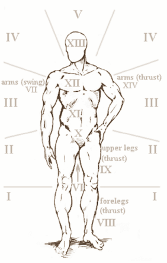

The order for a combat round in TRoS is as follows:
1. Declare Stance - Aggressive (+2CP for offensive, -2CP defensive
maneuvers in first exchange), Defensive (+2CP on defensive, -2CP on offensive maneuvers
in first exchange), Neutral, or None (Reflex test, TN5, to react to incoming attacks)
2. Establish Aggressor and defender (Intiative) - Throw differently
colored dice to indicate attack or defense.
3. First "Exchange of Blows" - Attacker(s), from lowest Reflex
to highest, declares attack maneuver, location, and number of dice. Defender(s),
from lowest Reflex to highest, declares defense maneuver and number of dice.
4. Resolve damage, if any, and determine new attitude - Success
or neutral result means attacker retains initiative. If one combatant successfully
fully evaded, go to step #1
5. Second "Exchange of Blows" - Just as Step 3
6. Resolve damage, if any, and determine new attitude - If one
combatant successfully fully evaded, go to step #1; otherwise, refresh combat pools
and go to step #3.
Attacks are always done by selecting a location, a maneuver, and a number of dice from the available combat pool.
| Thrusts (including punches) to the head (XIII): -1CP |
| Thrusts to the lower legs (VIII): -2CP |
| Thrust to the arms and hands (XIV): -1CP |
| Cuts/Bashes to the lower legs vs. shields: +1CP |
| Cuts/Bashes to the arms/hands (VII): +1CP |
| Missile weapon attacks to the head (XIII): -2MP |
| Missile Weapon attack to the lower legs or arms: -3MP |
Attacks against a longer weapon are made at a -1CP for each "step" in difference. The penalty holds until the smaller weapon strikes a damaging blow, at which point the penalty transfers to the longer weapon, for both attack and defense. Half-swording is a popular technique to keep your weapon at an advantageous weapon length.
1. Hand - Fists, daggers, knee-strikes, grappling, etc
2. Short - Hatchets, short swords, long knives, etc
3. Medium - Arming swords, flails, etc
4. Long - Greatswords, bastard swords, spears, etc
5. Very Long - Long spears, polearms
6. Extremely Long - Pikes, lances
A risky maneuver, buying iniative allows a combatant to force their attack to strike immediately, preempting an aggressor or taking initative when they initially rolled defense.
To buy initiative, spend a number of CP equal to your opponent's Perception (Per). A contested roll is made between the buyer's WP and their opponent's Wit, both TNs being equal to the other's Reflex. The buyer (and only the buyer) may raise his opponent's TN by spending 1CP for every +1, to a maximum of the buyer's Wit. The winner of the contest strikes first, the loser strikes second, assuming they have any CP left.
When an attack succeeds, one calculates the Modified Damager Rating (DR) as (Weapon Damage + Margin), then deduct the defender's Toughness (TO) attribute. If the rating remains positive, then the attacker rolls a d6 to determine location based on the damage type and intended location using the tables in Appendix One.
Given the location, the Seneschal makes a reasonable determination if armor equipped on the character defends that location. If applicable, the rating of that armor further reduces the damage by its rating. Finally, the remaining damage is applied as boxes to the victim, causing the effects noted. Damage to the same hit location may, with Seneschal discretion, be cumulative.
Shock is a number of dice that is deducted from the victim's CP immediately. If there is additional shock beyond the current CP, then apply it at the start of next round as well. Shock is only applied once for each wound.
Pain is a number of dice that is removed from the pool at the start of the round when pools refresh. It is often reduced by the Willpower attribute, as noted in the damage table.
Blood Loss covers the deterioration of health due to bleeding. At the start of each round, the combatant must make an Endurance (EN) check against the cumulative BL rating for all current wounds. Failure means temporarily losing a point of Health (HT). When HT reaches 1, all attributes and pools are halved. When HT reaches zero, the character immediately loses consciosness.
Knockdown (ST + AG)/2 applies any time a blow reduces a combatants CP to less than zero. Roll the knockdown trait versus TN equal to twice the number of attacker's successes (three times if a mass weapon); or when indicated by the hit location table. Failure indicates knockdown, which means combatant is prone and CP is halved.
Knockout (TO + 1/2WP) covers when certain wounds or circumstances may incapacitate combatants. Roll Knockout versus TN7, modified by circumstance. Failure results in 1d10 rounds of unsconsciousness; fumbling results in 1d10x10 minutes.
This is the standard attack for all swung blunt weapons. Extra power may be added to a bash by expending one (and only one) extra CP die prior to rolling and adding 1 damage in the event of a successful hit.
The beat is an attack upon an opponent's weapon or shield in attempt to temporarily remove it from the equation. Beats may only be performed at the start of a bout or following a "pause". This sudden, brutal, and effective maneuver is executed by declaring "Beat" as your offensive maneuver, along with the dice alloted to the attack. The defender assigns defense dice to a defensive maneuver and the contest is rolled normally. If the attacker wins the beat, then the defender's weapon (or whatever is "beaten") is thrown aside and cannot be used in defense on the following exchange. Additionally, every success in the attacker's Margin costs the defender 2 CP (this functions similar to Shock). If the defender wins then the round is resolved normally.
Using a Beat is an excellent way to handle opponents with longer weapons as well: all range penalties are but in half (round down) when beating.
This maneuver uses off-hand weapons (shields, poniards, etc) to bind or pin down an opponent's weapon, opening up a clear follow-up attack. On one exchange, roll attack as normal with the off-hand weapon or shield (using DTN as ATN for shields). If this attack is successful, your opponent loses 1 CP for every success in the margin, good on the next exchange.
This is the standard attack for all edged weapons. Extra power may be added by expending one (and only one) extra CP prior to rolling to add 1 damage in the event of a successful hit.
Attacking with two weapons at once is a tricky thing. Divide you dice on this attack in any proportion between both weapons (remember weapon length penalties) and attack. Your opponent may defend by (a) evading (b) blocking or parrying one and hoping the other doesn't hit (c) if properly equipped, block or parry both (d) buy initiative to hit first
In principle, the attacker cuts with his weapons while simultaneously jumping backward so as to evade an opponent's attack. This maneuver requires a great deal of skill, but is indispensable to those who often find themselves in quick-draw style duels where both opponents go straight to attacks.
To excecute this maneuver one attacks as normal, spending an additional die to activate the maneuver. Once the maneuver is activated, any number of additional dice may be spent to raise your opponent's ATN by one per additional die. On the downside, your own ATN also raises, though only by one for every two dice spent this way. It can only be activated as a slash-like manuever.
This is the first "trick" that most swordsmen know, consisting of slashing at one region of the body, then changing direction mid-swing in an effort to pass the defender's defenses entirely. This is relatively difficult and slow, with a high activation cost.
The Activation Cost is 1CP for every region the feint moves from the originally declared location (min 1, max 4). Once the activation cost is paid, any number of dice may be added to the attacker's hand, at a cost of 1 CP for every additional die rolled in the attack. A feint in always declared after the defender declares defense but before dice are rolled.
Feints have a tendency to lose their novel effect after a while when used against the same opponent. Each repeated identical feint against a single opponent (over any number of duels) costs an extra CP to execute.
This is a more practical feint than Feint-and-Cut, as easily perform either longswords and broadswords as with shorter weapons. Like the feint-and-slash, it beings with a false slash - usually overhand or across (zones III, IV, and V), but finishes with a thrust to the head, neck, or torso.
The Activation Cost is 1CP for every region the feint moves from the originally declared location (min 1, max 4). When attempting a feint-and-thrust, the attacker declares a slashing attack (rapiers are the exception, and may feint from a thrust), complete with location and CP dice expenditure. The defender then declares his own defense - unlike the feint-and-slash, this maneuver is good against parries only. The attacker now states that he is feinting and thrusting and adds any number of CP dice to his pool at a cost of one CP thrown away for every one added.
Feints have a tendency to lose their novel effect after a while when used against the same opponent. Each repeated identical feint against a single opponent (over any number of duels) costs an extra CP to execute.
Offensive grappling comes in two forms - a set-up grapple, and a straight grapple. Set-up grapples are easiest to do. To "set up" your opponent you attack during one Exchange - this attack does no damage and needs only to tie or win. On the following exchange, you may attack again to attempt a grapple with no activation cost (but don't forget range penalties). Without the set-up the activation cost must be first be paid. If this attack is successful you may either (a) toss your opponent or (b) pin him down. For tosses you may either deal damage to him by putting down down hard (DR: ST+1B for most surfaces) or you can send him rolling or flying away. Compare margin of successes: 0 = at your feet, or ST + (Margin - 2) feet away.
Pinning your opponent down or wrapping them up reduces their total CP by 3/4 in the case of 4-5 successes in the Margin, 1-3 successes rende them "held" (1/2 CP). A tie or failure leads to Wrestling, as per the Wrestling proficiency.
This is one of the few practical ways to kill an armored opponent in full harness (full plate) with a sword. Used with longswords, bastard sowrds, and other longer weapons, the half-sword technique is performed by grasping the blade of the sword with the off-hand in order to use the sword as a short spear or pole-weapon. This technique is particularly useful in close-quarters as well, when swinging a long weapon may be impractical. Half-swording reduces the sword's effective length by one or two steps, as desired. Half-swording add +3 damage when thrusting against armor. ATN when half-swording is always 5, DTN is always 6.
Once can shift from normal grip to half-sword at any time, for instance even during a Counter, though doing so during an exchange costs 1 CP and requires a Reflex/TN6 roll. The half-sword may be released at any time.
Many pole-arms and maces are capable of hooking an opponent's limb or head. This maneuver is executed like a thrust that intentionally misses, and then the shaft is pressed against the target and pulled. This maneuver is particularly effective on the legs, causing one's opponent to fall and become prone. After spending the Activation Cost (usually 1) allot dice for a refular thrust-like attack. Every success in the Margin of Success lowers the target's Knockdown attribute by one die. The hooked party then rolls Knockdown/TN8. Failure drops him to the ground (-1/2 total CP for lying prone). Fumbling causes damgage as a 6' fall.
This gusty maneuver is not unlike the bind and Strike maneuver, except that is all happens in the course of one Exchange. To perform this maneuver, divide your CP between attack and defense (remember that you may need dice for the next Exchange). Either attack or defense must be half as large as the other (this you could divide 9 dice into 6 and 3, or 3 and 6, but not 2 and 7). The defense is then rolled against your opponent's attack and your offence against his defense (if any). This maneuver is obviously only useful in situations where both you and your opponent are attacking at once. All attacks are resolved normally.
This maneuver consists of leaping or stomping at an opponent and then halting suddenly to throw your opponent off guard.
The maneuver's cost is variable. Roll a contest of the attacker's WP against the defender's Reflex. The attacker's TN is equal to his opponent's Per. The defender's TN is equal to 7 plus the number of dice the attacker spends in executing the maneuver. This count as an attack. If the defender wins, then he may take the initiative normally. If the attacker wins, then his opponent loses a number of CP equal to the attacker's margin of success. This maneuver if really only effective once. Every additional attempt (whether the first one failed or not) cumulatively costs 1 extra CP to the attacker.
Trying to put the pointy end into your opponent. Thrusts are notoriously fast, act as if the thrusting party's Reflex was 1 higher should initiative tie (as when both side declare attack).
Distraction has always been an important part of dueling and combat. This maneuver allows you to toss a hat, glove, sidearm, or other object into your opponent's face, thereby distracting them. To execute this maneuver, simply allot dice as for a normal attack. The ATN is assumed to be 7 for most hand-held objects such as a fist of sand, glove, hat, or dagger. Your opponent may dodge this object at DTN 7 (like a partial evasion). If you win, each success in the Margin causes him to lose 1 CP on the following Exchange (not unlike a bind-and-strike). Additionally, you retain the initiative.
This is the most basic of defenses, halting or deflecting an incoming attacks. Where game mechanics are concerned, blocking works essentially the same as any parry, except that is uses a shield's DTN.
This maneuver consists of blocking or parrying an incoming attack wide open, then using a second (usually primary) weapon to attack the new opening. During one Exchange defend, according to the Block or Parry maneuver, but with the added Activation Cost (usually 2 dice). Assuming a successful defense, the follow-up attack may then be made with one additional die for every success in the Margin.
Though primarily an offensive action, counters are intiatived by the defender. Sometimes called a riposte, a counter relies on receiving an opponent's attack, then using it against him.
After paying the Activation Cost, dice are allocated as in a standard parry. If the defender loses, he is hit. If he wins, then every successful die the attacker rolled becomes one extra die that the countering party may add to this next attack.
Additionally, due to the myriad nature of counters, the countering party should roll on the table to find the exact effect of his counter. Those with the Accuracy gift may modify their roll on this table as if it were a Hit Location chart. Anyone may spend up to 2 CP to modify their roll by one location per CP spent. This roll is made prior to rolling any attack dice.
| Roll d6 (Rapier or Half-Sword) | Roll d10 | Effect |
|---|---|---|
| 1 | Slash at I | |
| 2 | Slash at II | |
| 3 | Slash at III | |
| 1 | 4 | Slash at IV |
| 5 | Slash at V | |
| 2 | 6 | Pommel to XIII (DR=STb) |
| 3 | 7 | Thrust to XIII |
| 4 | 8 | Thrust to body (XI or XII) |
| 5 | 9 | Grapple - See grappling maneuver, no cost to activate |
| 6 | 10 | Disarm - Weapon is pulled from opponent's hands. 1-2 successes = 3 feet away, 3-4 1d6+1 yards, 5+ puts it in attacker's hand or 1d10 yards away as desired |
This maneuver is not dissimilar to the offensive beat, but is initiatied from the defender's side. This maneuver is only effective against thrusts and thrust-based attacks, or against slash-based attacks made with 4 dice or less.
To execute an expulsion, simply declare "expulsion" alongside the standard parry. Dice are allocated to the parry as usual, usually along with a two-die Activation Cost. The effects are nearly identical to those of an offensive beat. If the parry fails, then the round is resolved normally. If the parry is effective, then each die in the defender's Margin causes a -1CP penalty against thrusting attacks against the defender on the next exchange.
Defensive grappling appears in three forms - grappling to trap, grappling to pin, and grappling to throw. The Activation Cost for each is the same.
Grappling to Trap is the most common form of grappling amongst swordsmen and armed grapplers. If successful, every success in the Margin adds one die to a follow-up attack as long as it is a punch, kick, or pommel strike. You can also apply this bonus to initiatie wrestling.
Grapplying to Throw can be used to put your opponent down hard (ST+1b for most surfaces, randomly distributed as falling damage) or you can send him rolling away. Compare margin of successes: 0 = at your feet, or ST + (Margin - 2) feet away.
Grappling to pin to hold you opponent down or wrapping them up reduces their total CP by 3/4 in the case of 4-5 successes in the Margin, 1-3 successes render them "held" (1/2 CP). A tie or failure leads to Wrestling, as per the Wrestling proficiency.
You may spend 1CP to enter half-sword while in defense, immediately enabling other defensive actions such as a Parry.
This maneuver consists of use a weapon to deflect an incoming attack. Parries are performed using the DTN of a weapon (primary or secondary).